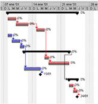

Sistemas Inteligentes para
Logística y Producción
|
|
Esta
línea de investigación está enfocada
en el desarrollo de tecnologías
basadas en la Inteligencia Artificial y la Investigación
Operativa,
para resolver problemas de optimización
industrial
tales como Planificación y Scheduling de la
Producción (Production
Planning & Scheduling), Planificación de Procesos de
Manufactura
Asistida por Computadora (CAPP, Computer-Aided Process Planning), y
Optimización Colaborativa.
|
 |
|
Computer-Aided
Process Planning (CAPP)
|
|
A
medida que el tiempo pasa los productos crecen en complejidad, lo que
hace difícil diseñar planes de proceso de
manufactura óptimos. La Planificación
de Procesos Asistida por Computadora (CAPP)
busca generar automáticamente planes de procesos de
manufactura de
productos. Para lograr este objetivo, estos sistemas toman como entrada
una representación formal del diseño del producto.
|
|
La
mayoría de los sistemas de CAPP propuestos hasta el momento
tienen
algunas limitaciones que hacen difícil su
implementación o reducen su
efectividad: por un lado existen sistemas basados en el conocimiento
que no soportan optimización; por otro lado hay sistemas
específicos de
una industria o tipo de producto que son difíciles de
adaptar a otros
casos. Además, los sistemas CAPP generativos no permiten al
ingeniero
de manufactura participar en el proceso de toma de decisiones durante
la planificación de procesos.
|
|
Este proyecto apunta a
desarrollar un sistema CAPP basado en agentes inteligentes,
que pueda ser adaptado a diferentes industrias y recursos de
manufactura, y que permita al ingeniero de manufactura participar
interactivamente a través de un esquema de
interacción de iniciativa
mixta con el agente inteligente.
|
Generación
de motores de Scheduling
|
El
Scheduling de la Producción es una función
importante en
la administración logística de una
compañía, así como en la
administración de
la supply chain. Los sistemas APS (Advanced Planning and Scheduling) se
encargan de esta función. Si el proceso de scheduling es
complejo y los sistemas APS disponibles en el mercado no
satisfacen los requerimientos, es necesario hacer un sistema a medida.
|
|  |
El core del APS es un motor de scheduling.
Aunque existen varias técnicas para resolver problemas de
scheduling, poco se sabe sobre metodologías para desarrollar
motores de scheduling, y esta es la gran brecha entre la academia y la
industria. Normalmente un motor de scheduling se desarrolla desde la
nada, lo cual requiere demasiado tiempo y dinero. Otros enfoques
utilizan frameworks con componentes especializados, los cuales son muy
difíciles de aprender y no garantizan una
reducción
significativa de los tiempos de desarrollo.
|
|
|
Este proyecto propone crear
un generador
automático de motores de scheduling
para dominios específicos. El producto final será
un
motor de scheduling, totalmente operativo y adaptado a las necesidades
del cliente, obtenido en el tiempo que toma modelar una instancia del
dominio. El lenguaje de modelado debe ser ajustado a la
terminología del dominio específico y debe ser
flexible
para modelar tanto las características usuales del dominio
como
las que son variables.
|
Tecnología
de Scheduling para dominios industriales
|
El
scheduling de la producción en la industria es una actividad
demandante que requiere mucho poder de cómputo para ser
llevado
a cabo. Muchos proyectos de I+D han sido realizados en el pasado por
los investigadores del CEAL, por los cuales mucho conocimiento y
expertise ha sido acumulado.
Como resultado, varios proyectos de transferencia de
tecnología
en scheduling de la producción han sido realizados, tales
como
el caso del sistema PAP (Planificación Avanzada de la
Producción) para la industria del envase flexible.
|
|